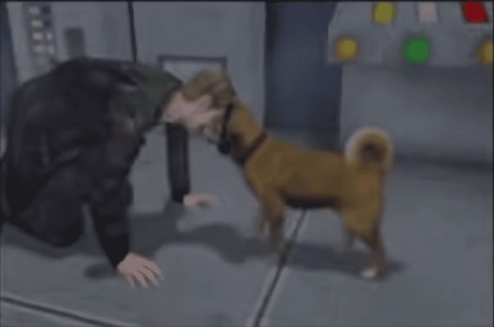
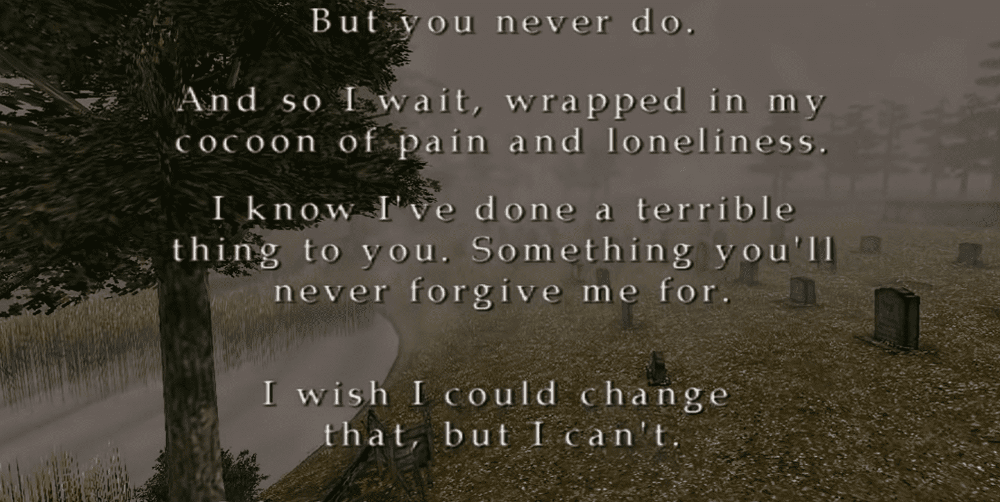

←Finales alternos
Perro
Para obtener el Final del Perro, primero debes desbloquear cada uno de los tres finales "normales": En el Agua Dejar María O desbloquear el final de Renacimiento. Esto te permitirá obtener la Llave del Perro. Después de cumplir con los requisitos previos, aparecerá una caseta de perro en un pequeño espacio vacío al otro lado de la calle desde el Parque Rosewater. Esto está justo al oeste del Jack's Inn. Investiga la caseta del perro para encontrar la Llave del Perro. Ahora que tienes la Llave del Perro, puedes usarla en la Sala de Observación en el tercer piso del Hotel Lakeview. Solo se puede usar después de que haya cambiado al otro mundo. Mira la cinta de video para cambiarlo, luego abre la puerta para obtener el final. Se puede ver a un perro operando algún tipo de máquina. James dice "¿Así que todo fue obra tuya?" Por alguna razón, la voz estará en japonés en ambas versiones de voz, la original y la nueva.
En el agua
Para obtener este final, hay una serie de cosas que debes hacer: Una vez que tengas el cuchillo de Angela, asegúrate de examinarlo al menos una vez en tu inventario. Debes leer el diario en el techo del hospital. Debes escuchar la grabación de audio en el hotel. En el pasillo justo antes de la pelea final contra el jefe, asegúrate de quedarte para escuchar toda la conversación. A lo largo del juego, no te cures inmediatamente si estás herido. Pasa tanto tiempo con poca salud como te sientas cómodo. Sigue estas reglas y deberías poder obtener este final. Se reproduce un breve recuerdo con James y Mary en su lecho de muerte. James recuerda por qué originalmente vino a Silent Hill. Conduce su automóvil hacia el lago Toluca.
Partida
Este es el final más fácil de conseguir y puede considerarse como el predeterminado. James y Laura se van de Silent Hill mientras se lee la carta completa de Mary.
María
Para obtener este final, hay varios requisitos que deben cumplirse, la mayoría de los cuales tienen que ver con cuán atento estés con Maria durante el juego. Mientras Maria te sigue, no la lleves en la dirección incorrecta. Si en algún momento ella dice algo como "¿A dónde vas?", es mejor que cargues tu última partida guardada. No permitas que sufra daño de los enemigos, y especialmente no la lastimes tú mismo. Cuando se enferme en el hospital, asegúrate de volver a visitarla varias veces. Aunque no esté en la habitación en el "Otro Mundo", es buena idea visitarla y examinar los frascos de pastillas vacíos de todos modos. Pudimos obtener este final cuando intentábamos obtener el final "En el Agua". Hicimos casi todo igual, excepto que no nos quedamos en el pasillo para escuchar toda la conversación. James se da cuenta de que no necesita a Mary. Va al Parque Rosewater y encuentra a Maria. Decide irse de la ciudad con ella. Justo cuando se dirigen al auto, Maria comienza a toser como lo hacía Mary.
Renacimiento
Para ver este final, debes completar el juego con cuatro objetos específicos en tu inventario: White Chrism Book of Lost Memories Obsidian Goblet Book of Crimson Ceremony Estos objetos estarán dispersos por todo Silent Hill para que los obtengas. Este final mostrará a James remando de regreso a través del Lago Toluca con el cadáver de Mary. Él intentará revivirla.
U.F.O.
Para desbloquear este final, primero debes obtener la Gema Azul. Una vez que la tengas, debes usarla en tres lugares específicos: En el jardín del Hospital Brookhaven inmediatamente después de la pelea con Flesh Lips. Junto al bote en el muelle del Lago Toluca ANTES de subirte a él. Junto a la ventana en la habitación #312 del Hotel Lakeview. Debes hacer esto ANTES de ver la Videocinta. Este final es silencioso, en blanco y negro. James encontrará a Harry Mason, el personaje principal de Silent Hill 1. Al igual que en Silent Hill 1, preguntará si James ha visto a su hija. Aparecerá un OVNI y un alienígena disparará a James.